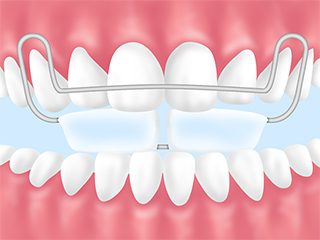

- TOP
- 矯正治療｜矯正治療の流れ
矯正開始までの流れは？ 装置をつける期間は？ など、矯正治療の流れを詳しくご案内します。また矯正終了後は定期的なメインテナンスを行って、お口を良い状態に保つことが大切。南区道徳の歯医者「名古屋みなみ歯科・矯正歯科」では、カウンセリング・治療プランの立案から治療、アフターフォローまで。患者様のお気持ちに寄り添いながら、丁寧にサポートしています。
Flow矯正治療の流れと、治療後のメインテナンス
治療の流れ
- 【1】ご予約
- まずはお気軽に、お電話またはWeb予約フォームからお問い合わせください。無料カウンセリングの日時を調整いたします。
- 【2】初診・口腔内写真撮影
- まずは問診票にご記入いただき、その後、お口の状態や歯並びを正しく把握するためにお口の写真撮影を行います。
- 【3】カウンセリング（無料）
- 治療方針や流れ、費用、使用する装置などについて、詳しくご説明します。また患者様のご要望などもじっくりとお聞きしますので、何でもお気軽にご相談ください。
- 【4】精密検査・治療プランの決定
-
歯科用CTの撮影や歯型採取など、より精密な検査を行ってお口の状態をさらに詳しく把握します。時間は30分程度で、事前のご予約が必要です。費用は検査内容により異なりますが、31,500円（税込）～となっています。
その後検査結果を踏まえて、治療計画を立案・提案。ご納得いただけましたら診療同意書を発行します。内容を一緒に確認しながら治療の進め方を確認しましょう。その上で、治療を開始します。
- 【5】矯正治療開始
- もし虫歯・歯周病などがあれば、そちらの治療を先に行います。その後、口腔内クリーニングを行って矯正装置を装着。歯を正しい位置へ導いていきます。
- 【6】調整
- 通院回数・間隔は患者様や治療内容によって異なりますが、目安としては約3～8週間に1回ご来院いただき、矯正装置の調整を行います。矯正装置の装着後、装着中は歯のクリーニングをお勧めします。
- 【7】治療終了
- 歯並び・噛み合わせの改善を確認できたら、矯正治療終了です。矯正装置を外して、後戻りを防ぐリテーナーという装置に着け替えます。
- 【8】メインテナンス
- 装置を外してから2年ほどは、矯正治療の効果を持続させて後戻りを最小限に抑えるために経過観察を続けます。定期的に通院し、医師のアドバイスを受けましょう。歯並びが安定したところで、メインテナンス終了となります。
治療後のメインテナンスについて

矯正装置で歯を動かしたあとは、歯の後戻りを防ぐリテーナーを装着。そして保定期間が終われば、無事矯正治療完了です。ただ、せっかく歯並びをきれいに整えても、その後虫歯や歯周病にかかってしまっては元も子もなくなってしまいます。
矯正治療中は特に装置の周囲に汚れがたまりやすいため、当院では装置を付けたあと、装着中の歯のクリーニングをお勧めしています。さらに、治療が終わった後のメインテナンスもしっかりとフォロー。ご家庭での正しいケアに加え、クリニックでの定期検診や歯のクリーニング（PMTC）を行うことで健康な歯を維持することができます。